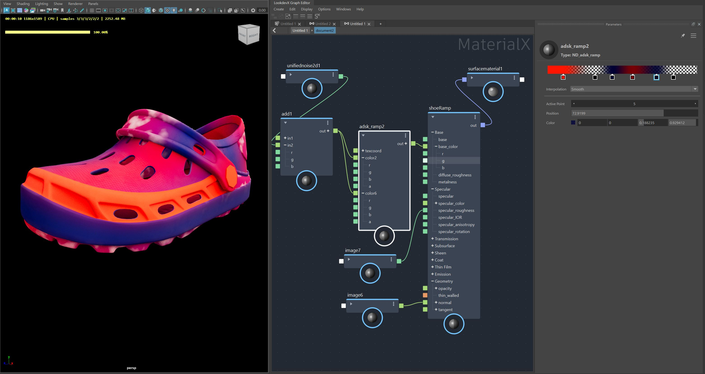

Ramp Node
There is a new node libary that enables the creation of a ramp in your LoodevX graph.

Typeless Node Workflows
Nodes of different types will automatically have their connections adjusted so that they can be easily connected and inserted into shader graphs. For advanced workflows, converter utility nodes are available that allow manual control of node type conversions.
Viewport support for Arnold materials
This latest update allows for more Arnold materials to be displayed in the viewport when using the MaterialX data model. Additional supported nodes include:
This feature requires Arnold 7.3.3. See install Arnold.
| [RAMP] Fix delete control point text LOOKDEVX-3028 |
| [Ramp] Using eye-dropper tool breaks the gradient display LOOKDEVX-2970 |
| Adsk_converter Node visible in Outliner during Dynamic Creation LOOKDEVX-3024 |
| [Ramp] Crash when File>New scene with exposed Input port on the ADSK_ramp node LOOKDEVX-3025 |
| [Typeless] Original connections are lost after duplicating nodes connected via adsk_converters LOOKDEVX-3023 |
| MaterialX XML data should not use ":" in attribute names LOOKDEVX-3016 |
| [Ramp] Crash when changing values on the color parameter tab LOOKDEVX-2969 |
| [MTLX] Time and Frame nodes aren't returning any value from maya time LOOKDEVX-3020 |
| [Ramp] Inability to Edit Unconnected Color Ports LOOKDEVX-3017 |
| [MtlX] Unable to copy/paste materialx document in a stack LOOKDEVX-3014 |
| [USD] Adsk_converter node multiple type option should have From and To field LOOKDEVX-3013 |
| [MTLX] Performance issue with changing node type LOOKDEVX-3012 |
| [Typeless] Issue with Hidden adsk_converter Nodes in Older Versions of LookdevX LOOKDEVX-3011 |
| [Typeless] Issue with duplicating Nodes Connected via Hidden adsk_converter Node LOOKDEVX-2983 |
| [Typeless] Stray ADSK_Converter Entries After fixing Incompatible Connections LOOKDEVX-2984 |
| [USD] Refresh issue with exposing Adsk_ramp color Input ports LOOKDEVX-2994 |
| [Ramp] Creating a node while ramp color picker active crash Maya LOOKDEVX-2967 |
| [LDX-Python]Update the ContextOp code to accept export arguments LOOKDEVX-2978 |
| Hide MaterialX nodes from Hypershade menu LOOKDEVX-2997 |
| [Ramp] Undo/Redo does not work when changing color values with color picker LOOKDEVX-2973 |
Crash soloing node in LookdevX that does not have a child named volumematerial1 LOOKDEVX-2986 |
| Display Default Color Value in VP2/Hydra for MaterialX Image Node LOOKDEVX-2995 |
| [Ramp] Disable color control if the port is connected LOOKDEVX-2972 |
| Each time Color Pot square is clicked, a new Color Picker is created LOOKDEVX-2941 |
| Shader Compilation Failure LOOKDEVX-2954 |
| [Ramp] Transparent curser does not go away if the curser is moved up LOOKDEVX-2930 |
| [Ramp] Color swatch box show up black after Selecting/Deselecting the node LOOKDEVX-2833 |
| Converter nodes are inconsistent when converting to color4/vector4 LOOKDEVX-2952 |
| [USD] Error when assigning Materialx material LOOKDEVX-2880 |
| Arnold image (color4) and range (color4) render with error shader when soloed. LOOKDEVX-2709 |
| [RAMP] interpolation combo widget initialization bug LOOKDEVX-2911 |
| [MTLX] MaterialX Viewport display is broken with the USD update LOOKDEVX-2903 |
| [Ramp] Drag deleting pointers on the gradient display does not work sometimes LOOKDEVX-2694 |
| Extend Deleting Distance Action for Ramp Points LOOKDEVX-2867 |
| [Typleless] Irregularities with Adsk_converter When Grouping Nodes LOOKDEVX-2879 |
| Synchronization Issue with Soloed Document when Declaration Value is Absent LOOKDEVX-2892 |
| Lost extended connection when renaming output port compound. LOOKDEVX-2869 |
| [Ramp] texcoord input is missing sub-component LOOKDEVX-2872 |
| [Ramp] Issue with Control Points Position Updating LOOKDEVX-2818 |
| Deselecting and reselecting the ramp node removes the control points LOOKDEVX-2689 |
| Attribute editor for MaterialXSurface stuck on first UFE path explored LOOKDEVX-2806 |
| Refresh issue in VP with MaterialX fractal3d nodes. Issue is hapenning "object space” does not exist in the viewport. The workaround is to use “world space”. LOOKDEVX-2360 |
| [Ramp] Numeric value control has "soft" range. Manually entering values outside of 0-1 could give undesired results. LOOKDEVX-2944 |
| Crash opening a new scene using right-click with color picker UI active. Use left clicks to open new files if color picker UI is active. LOOKDEVX-3030 |